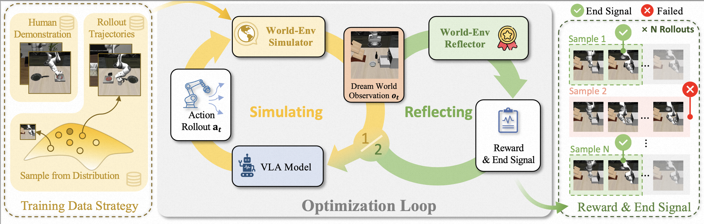
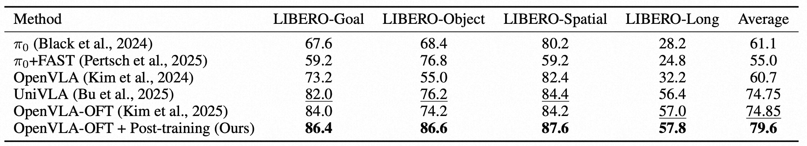
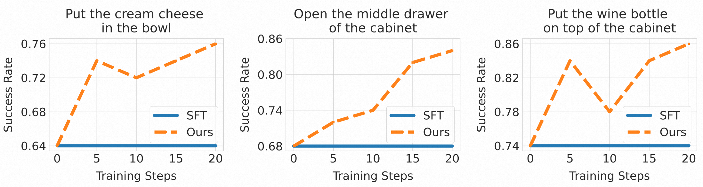

Vision-Language-Action (VLA) models trained via imitation learning suffer from significant performance degradation in data-scarce scenarios due to their reliance on large-scale demonstration datasets. Although reinforcement learning (RL)-based post-training has proven effective in addressing data scarcity, its application to VLA models is hindered by the non-resettable nature of real-world environments. This limitation is particularly critical in high-risk domains such as industrial automation, where interactions often induce state changes that are costly or infeasible to revert. Furthermore, existing VLA approaches lack a reliable mechanism for detecting task completion, leading to redundant actions that reduce overall task success rates. To address these challenges, we propose World-Env, an RL-based post-training framework that replaces physical interaction with a low-cost, world model-based virtual simulator. World-Env consists of two key components: (1) a video-based world simulator that generates temporally consistent future visual observations, and (2) a vision-language model (VLM)-guided instant reflector that provides continuous reward signals and predicts action termination. This simulated environment enables VLA models to safely explore and generalize beyond their initial imitation learning distribution. Our method achieves notable performance gains with as few as five expert demonstrations per task. Experiments on complex robotic manipulation tasks demonstrate that World-Env effectively overcomes the data inefficiency, safety constraints, and inefficient execution of conventional VLA models that rely on real-world interaction, offering a practical and scalable solution for post-training in resource-constrained settings.
Figure 1. Comparison of three VLA training paradigms: (a) Imitation learning suffers from poor generalization under data scarcity. (b) Prior RL-based post-training methods require real-world interaction, which is often infeasible due to non-resettable state transitions (e.g., object drop or collision). (c) Our proposed World-Env enables post-training via simulated rollouts using a world model, eliminating the need for physical interaction and supporting safe, efficient exploration even with minimal expert demonstrations.

Figure 2. Overview of World-Env. Our framework comprises: (1) a Training Data Strategy that augments human demonstrations trajectories with VLA self-explored trajectories to train the WorldEnv Simulator; (2) an Optimization Loop where the VLA model generates actions, the simulator predicts future observations, and the World-Env Reflector generates feedback; and (3) Reward & End Signal provides trajectory-wise reward and end signals for RL optimization.

Table 1. Success rate comparison on the LIBERO benchmark. We report success rates for each method using the same setting with only 5 demonstrations per task.

Figure 2. Comparison between our method and SFT on multi-goal tasks. Note, all results are collected every 5 training steps for three distinct goals.
@misc{xiao2025worldenvleveragingworldmodel,
title={World-Env: Leveraging World Model as a Virtual Environment for VLA Post-Training},
author={Junjin Xiao and Yandan Yang and Xinyuan Chang and Ronghan Chen and Feng Xiong and Mu Xu and Wei-Shi Zheng and Qing Zhang},
year={2025},
eprint={2509.24948},
archivePrefix={arXiv},
primaryClass={cs.RO},
url={https://arxiv.org/abs/2509.24948},
}